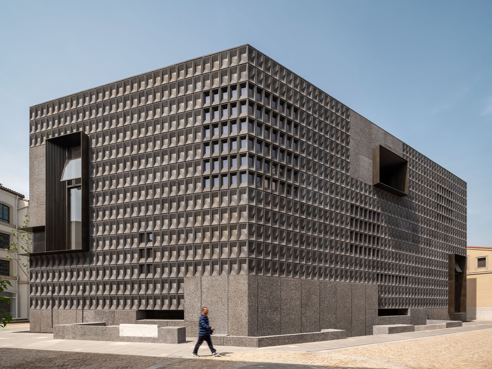
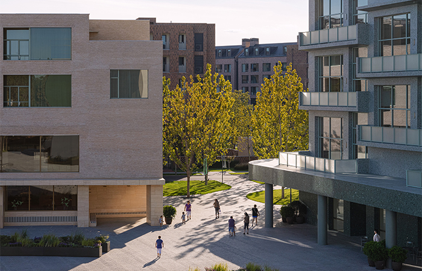
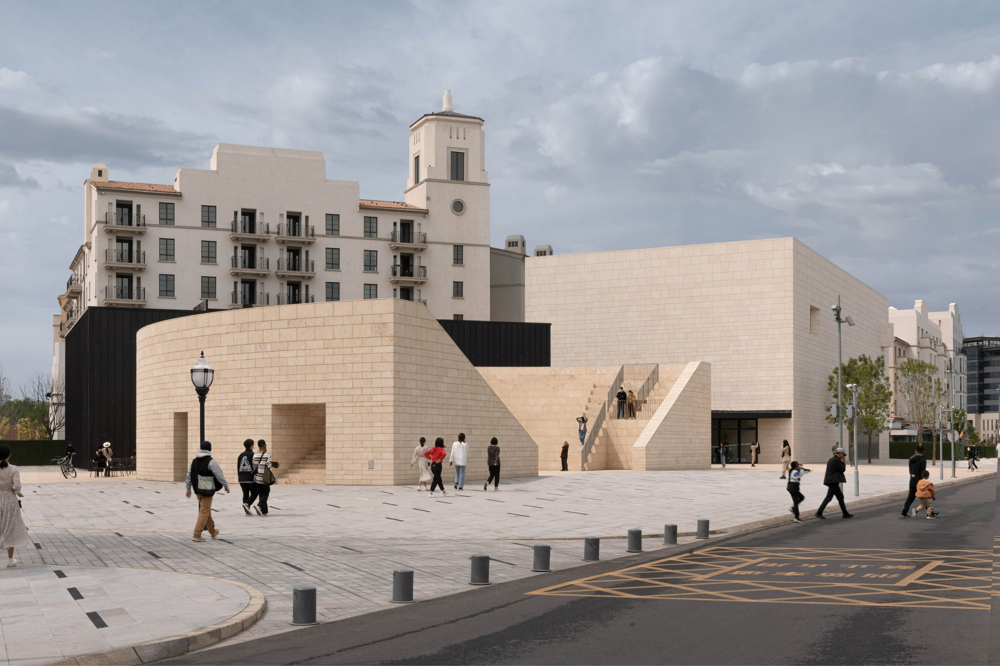

城市色彩研究 / Coastal Chromatics
阿那亚的白色谱系
白色在这里不是空白。它从海雾、浪沫、沙丘和强光中出现，被建筑提纯为精神符号， 又被商业空间、社区秩序和社交媒体转译成一种可进入、可消费、可传播的生活方式。

核心关系
- 生态白海、沙、雾、光
- 建筑白礼堂、图书馆、美术馆
- 商业白民宿、咖啡、展陈
- 秩序白低饱和街区、克制店招
- 传播白照片、滤镜、城市品牌
Color Atlas Method
白色不是孤立的，它需要一套城市色彩系统支撑
阿那亚的白色并不只存在于墙面、沙丘和礼堂，它还被周围的海、植物、木质界面和夜间活动共同校准。 礼堂白、图书馆灰、沙丘米构成空间底色， 海岸蓝、生态绿、木色作为辅色，落日橙、夜游黑、电光蓝、剧场红作为点缀色。 这套色彩关系让“白”在文化、商业和生态之间保持克制而可识别的秩序。
01 / Ecological Whites
白先来自海岸环境
阿那亚的白并不是凭空设计出来的。冬季海雾降低对比度，浪沫提供短暂的高明度， 沙丘和贝壳带来暖白底色，夏季强光又把画面推向过曝。自然中的白是流动的， 建筑把它固定下来。
海雾白
冷、远、失焦。来自阴天、雾气和低对比海面。
浪沫白
短暂、流动。只在潮汐和浪尖上显现。
沙丘白
温暖、粗粝。来自沙、贝壳、干草和盐分。
过曝白
明亮、梦幻。来自强光和社交媒体的影像滤镜。
02 / Architectural Whites
建筑把自然的白提纯成文化符号
礼堂的白趋近仪式，图书馆的灰白指向独处，沙丘美术馆的暖白让建筑退入地形。 这些白不只是外墙颜色，而是把海岸经验变成可识别、可拍摄、可传播的阿那亚符号。


03 / White Motifs
白色可以被转译成图案语言
阿那亚的白不只是一组色值，也可以被拆解成可被观看、复用和传播的平面元素： 海雾形成低对比渐层，浪沫形成短促的重复线，沙丘留下缓慢的弧线纹理，强光把边界推向消隐。 这些图案让“白”的不同状态从建筑表面进入版面、导视、展览物料和社交影像。
海雾白
低对比、远景化、边界被空气稀释。
浪沫白
短线重复、轻微错位、只在瞬间出现。
沙丘白
弧线缓慢叠加，带有粗粝和温度。
过曝白
中心高明度扩散，轮廓被光线吞没。
04 / Commercial Translation
商业把白转译成生活方式
当白色变得温柔、洁净、低干扰，它就可以进入民宿、咖啡、买手店、展览和活动。 礼堂白提供精神感，海雾白提供孤独感，奶油白提供舒适感，过曝白负责传播。



孤独
被转译为独处体验、精神度假和海边停留。
安静
被转译为高级感、低干扰消费和慢生活叙事。
留白
被转译为可拍照、可想象、可投射的消费背景。
艺术
被转译为展览、活动、市集和文化型商业内容。
05 / Ordered Whites
白也是一种社区秩序
低饱和街区、克制店招、统一外立面和干净公共空间共同降低视觉噪音。 阿那亚的松弛感不是完全自然发生，而是被色彩、界面和运营共同维持。
06 / Mechanism Map
白色机制关系图
五层白色不是并列存在，而是层层转译：生态提供底色，建筑形成符号， 商业转化体验，社区维持秩序，影像完成传播。
当前层级
生态白
海、沙、雾、光构成阿那亚白色的自然底色。
Conclusion
阿那亚不是因为“用了白色”而特别
它特别之处在于把白色变成了一种组织城市体验的方法：把海岸生态转化为审美， 把建筑转化为精神符号，把商业转化为生活方式，把社区转化为被策展的日常。